Part I
The purpose of the first part of this project is to determine if there is a correlation between the
following:
- latitude vs. temperature
- latitude vs. cloudiness
- latitude vs. humidity
- latitude vs wind speeds
This was done by creating code that randomly selects 500-600 cities world-wide, using Open Weather
Map API to obtain weather data from each city, and then using Matplotlib to create visualizations of
that data.
Part II
The purpose of the second part of this project is use GeoPlaces to create a heat map that displays
where the randomly-selected cities are located in the world.
The selected cities were narrowed down based on ideal weather conditions determined by the
user. All hotels within 5 km of each of the reamining cities were then plotted on a map.
Languages
- Python
Data Extraction & Manipulation
- APIs
- Gmaps
- Matplotlib
- Pandas
- NumPy
Additional Technologies
- Jupyter Notebook
API to obtain weather data: Open Weather API
WeatherPy.ipynb- part I of project
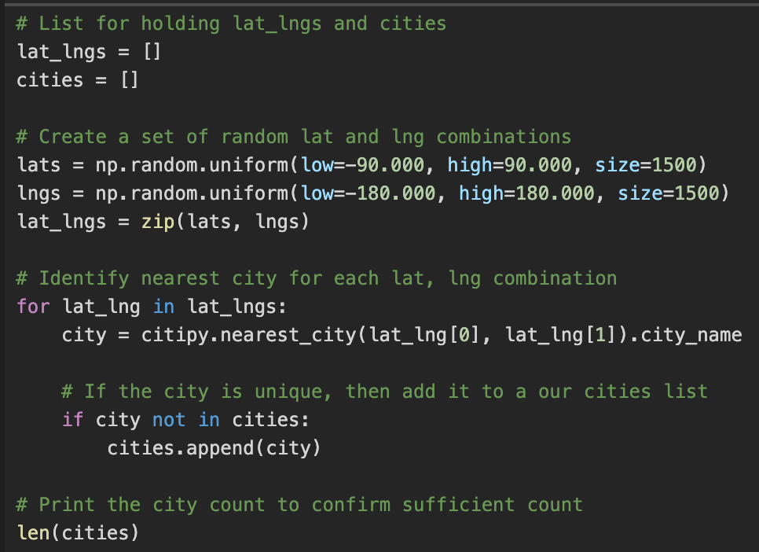
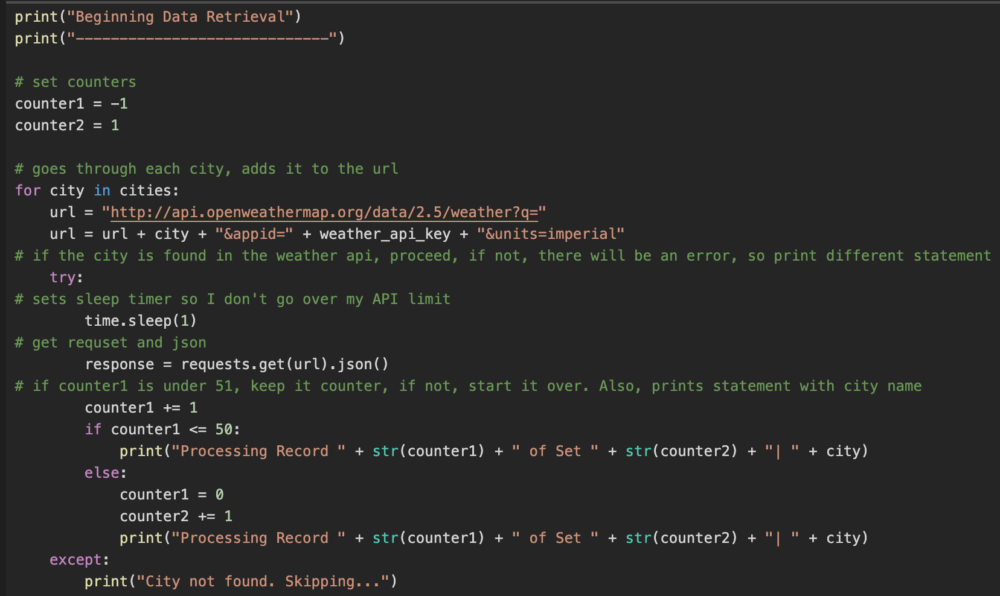
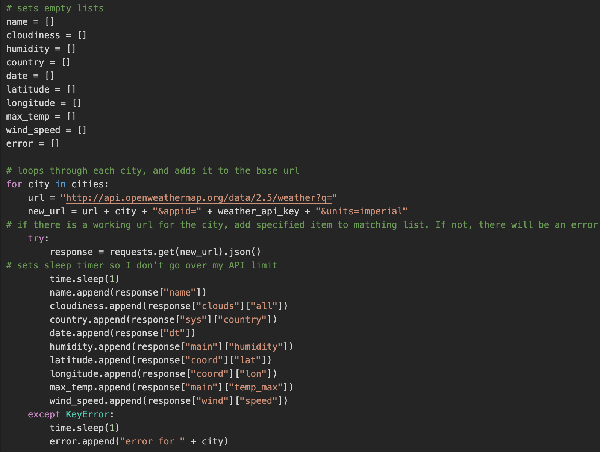
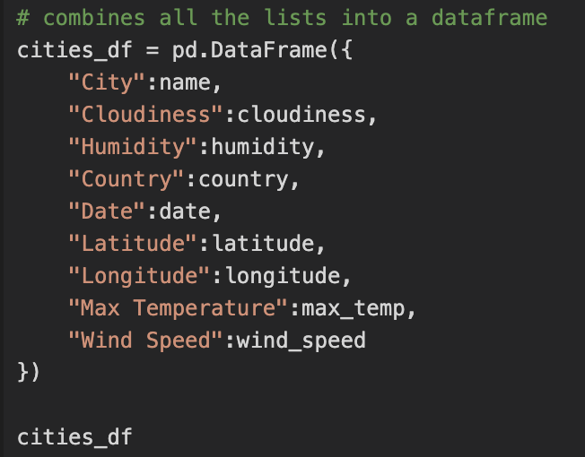
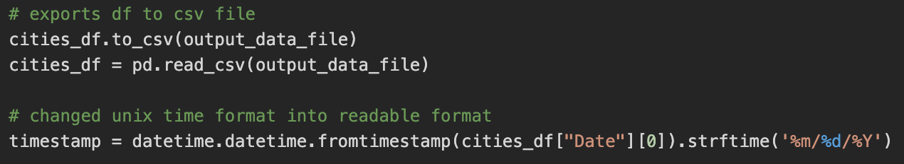
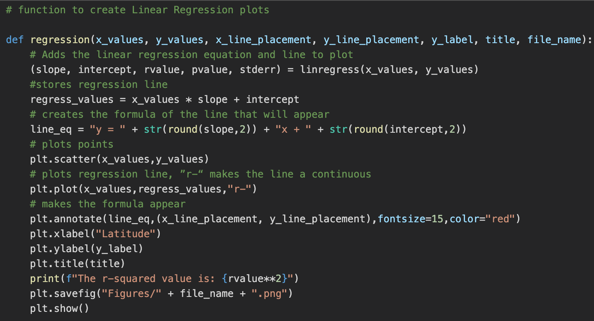
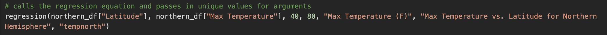
VacationPy.ipynb- part II of project
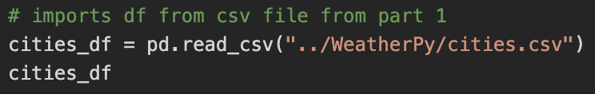
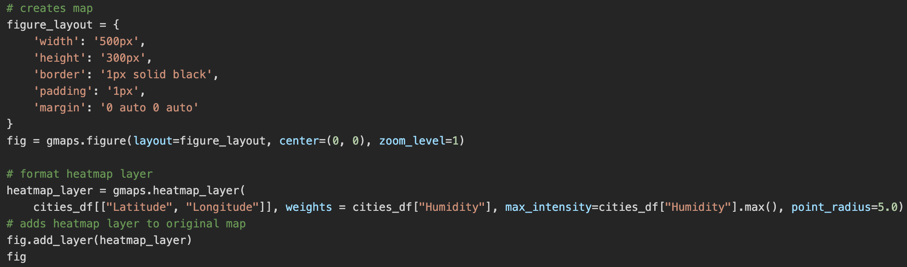
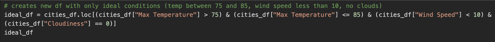
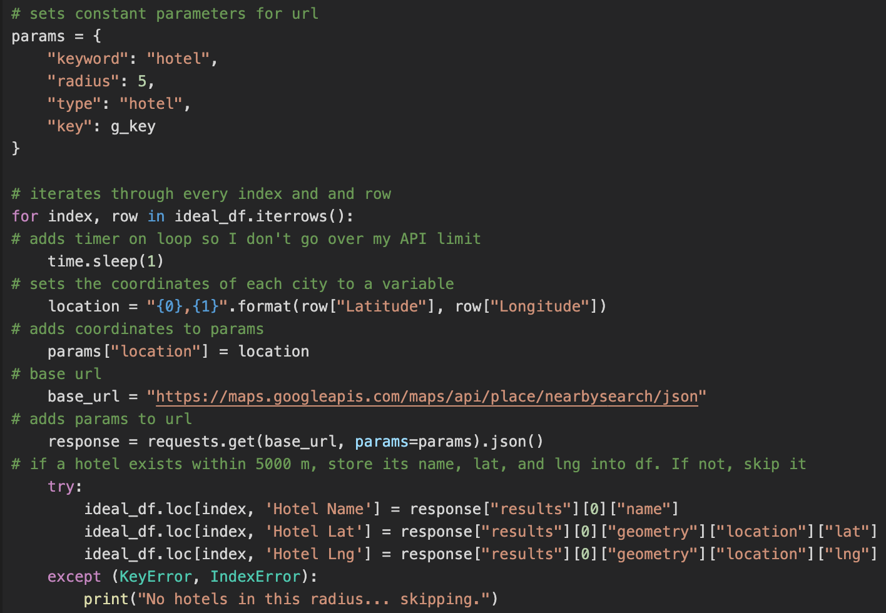
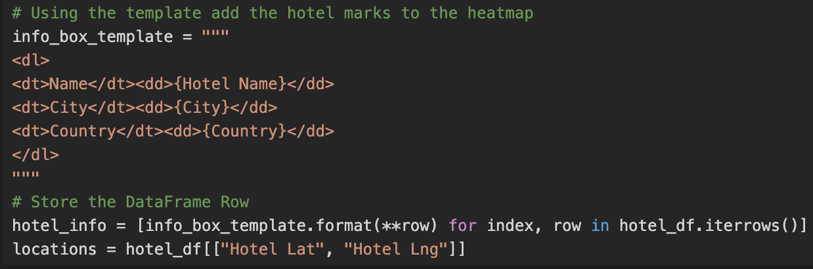
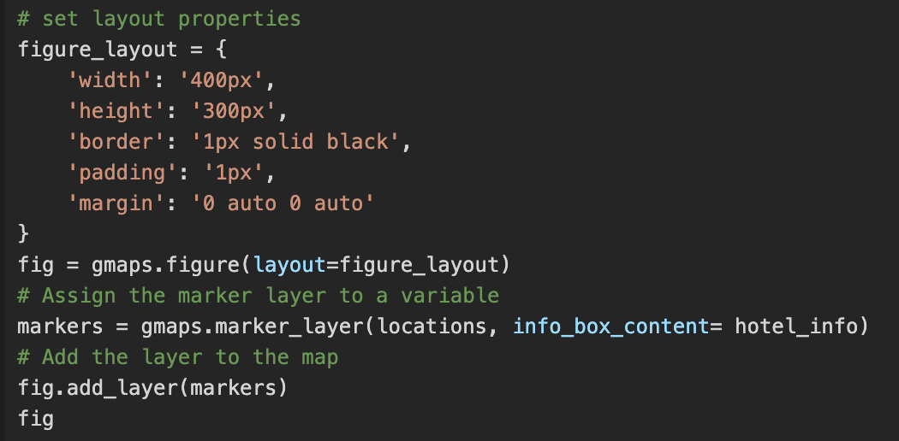